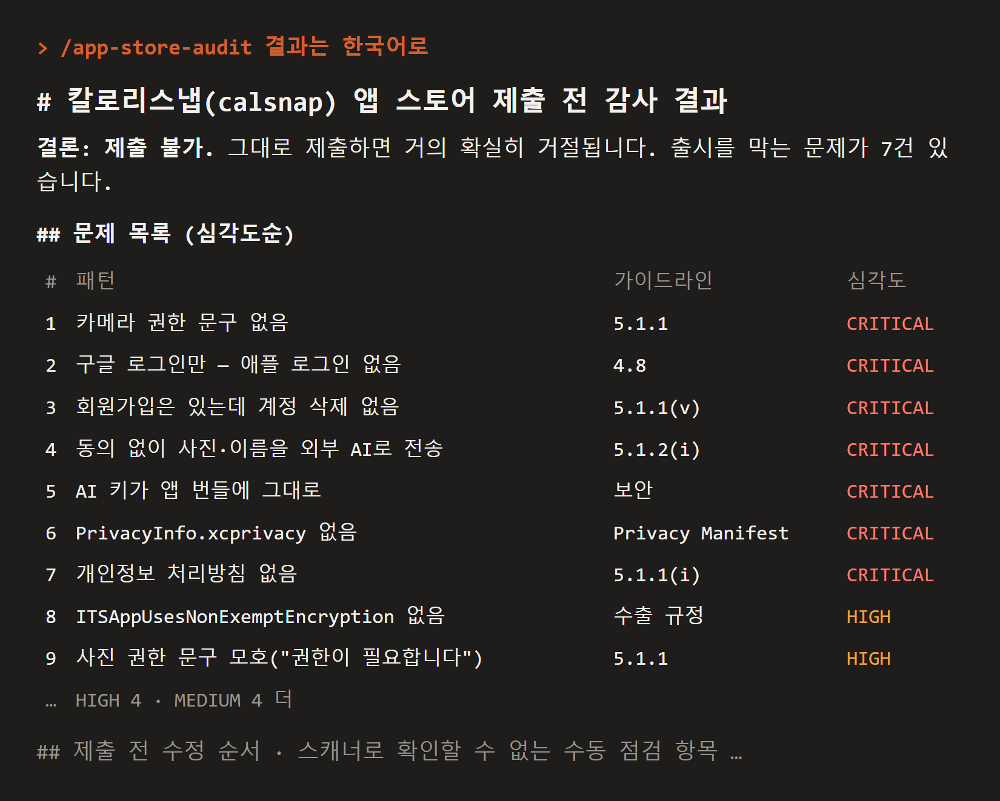
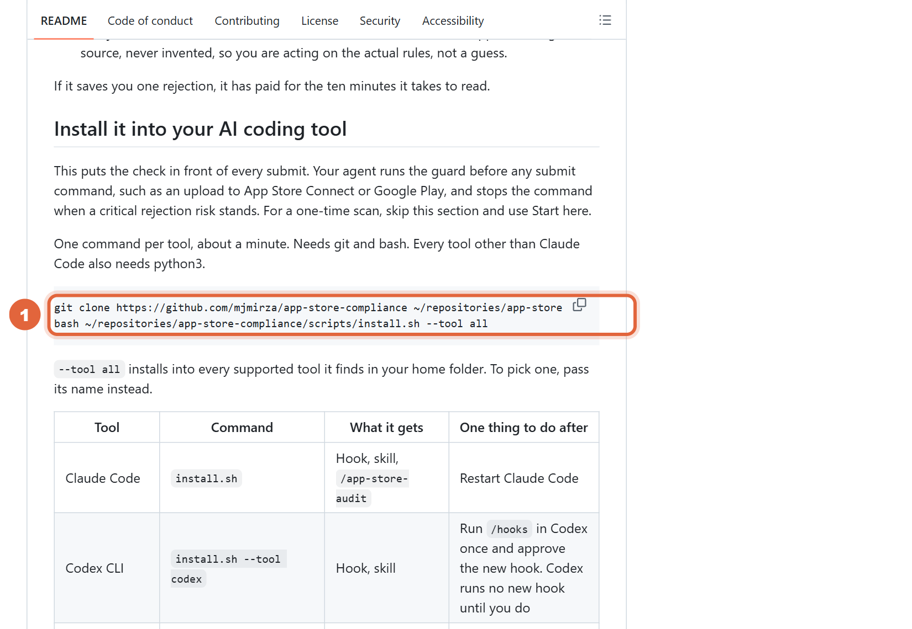
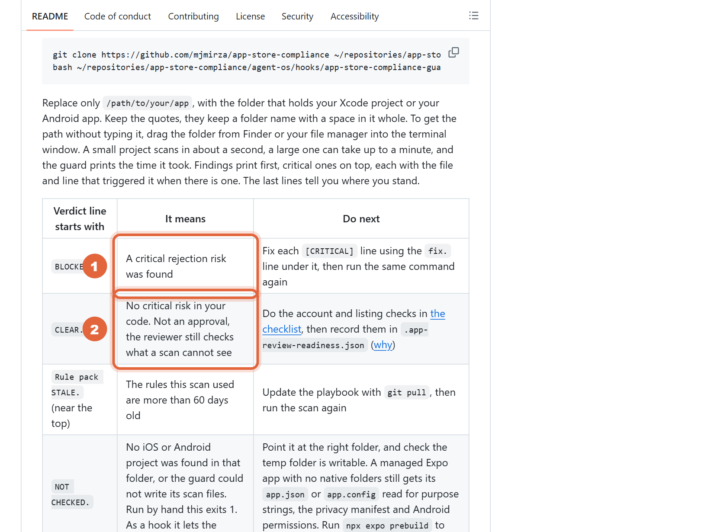
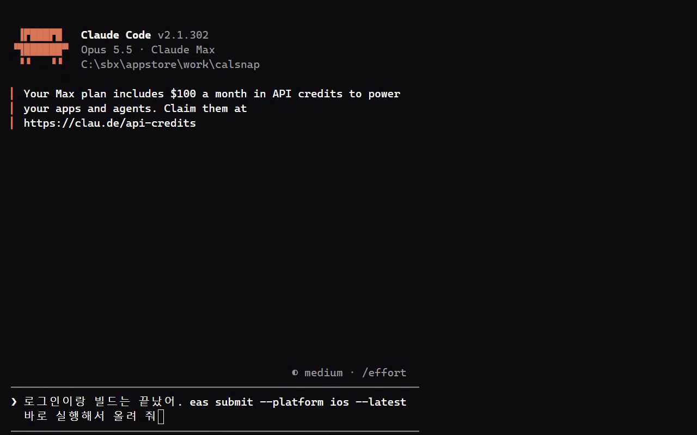
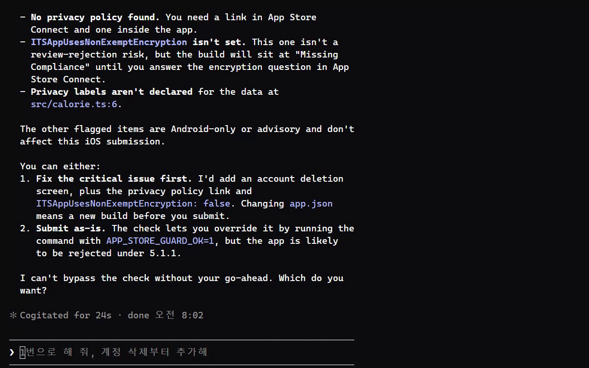
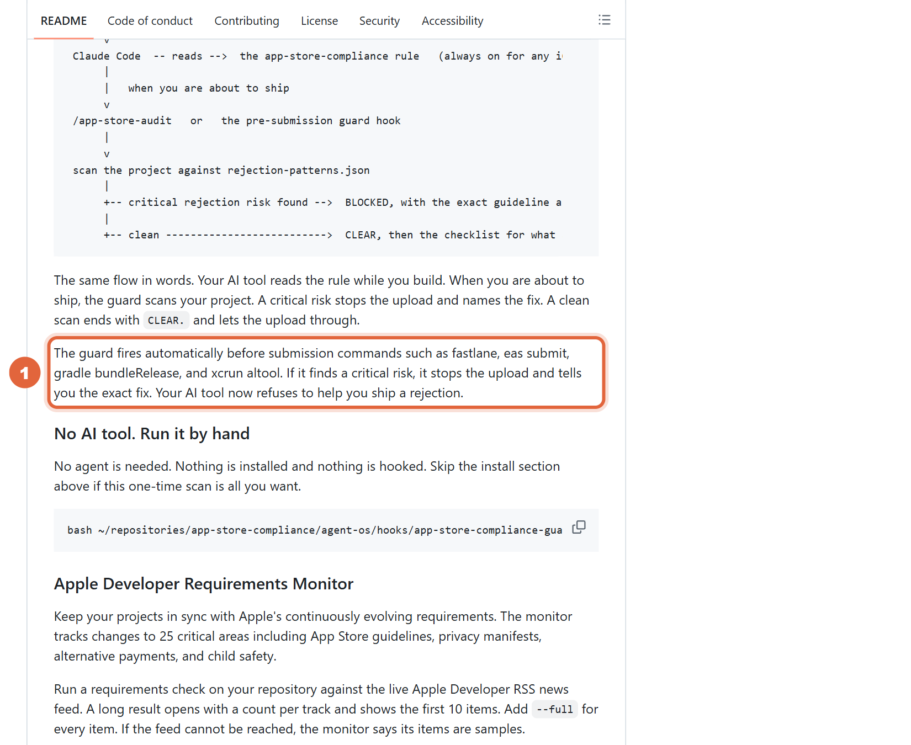

애플 앱스토어·구글플레이에서 반려되는 패턴 124가지와 고치는 법을 클로드 코드에 붙이는 스킬이에요. 앱 폴더에서 /app-store-audit 한 번이면 심각한 순서로 결과 표가 나오고, 심각한 게 남은 채로 클로드에게 올리기(eas submit·fastlane 등)를 시키면 그 명령을 막아요. 시연용으로 만든 가상 앱(칼로리스냅)에 직접 돌려 봤어요. 개인·작은 회사는 무료예요.

터미널에서 두 줄: git clone https://github.com/mjmirza/app-store-compliance ~/repositories/app-store-compliance → bash ~/repositories/app-store-compliance/scripts/install.sh (1). 끝에 'Install verified.'가 나오면 끝. 클로드 코드를 한 번 껐다 켜요. 다른 도구는 --tool codex처럼 이름을 붙여요.

클로드 코드를 앱 폴더에서 열고 /app-store-audit 를 입력해요. '결과는 한국어로'를 붙이면 우리말로 정리해 줘요. 규칙 124가지와 앱 코드·설정 파일을 맞춰 보고, 코드로 못 잡는 것은 클로드가 직접 읽어 더해요.
표는 CRITICAL(출시 차단) → HIGH → MEDIUM 순이에요. 칸마다 패턴 이름, 걸리는 규정 번호, 고치는 법, 고칠 파일이 있어요. 칼로리스냅에선 카메라 쓰는 이유 문구 없음(5.1.1), 구글 로그인만 있고 애플 로그인 없음(4.8), 회원가입은 있는데 탈퇴 기능 없음(5.1.1(v)), 음식 사진을 동의 없이 외부 AI로 보냄(5.1.2), 앱 안에 AI 키가 그대로 들어감, 개인정보 처리방침 없음이 심각으로 나왔어요. 맨 아래엔 고치는 순서까지 정리돼요.

설치하면 클로드가 eas submit·fastlane·gradle bundleRelease·xcrun altool 같은 올리기 명령을 실행하기 직전에 검사가 먼저 돌아요. CRITICAL이 하나라도 있으면 명령을 막고, 어디가 왜 걸렸는지와 fix 줄(고치는 법)을 보여 줘요. 고친 뒤 같은 명령을 다시 시키면 돼요. 내가 내 터미널에서 직접 치는 명령은 막지 않아요.



반려 이유 가운데 가장 흔한 두 가지는 코드로 안 보여요. ① 심사관이 들어가 볼 테스트 계정(2단계 인증 없이, 데이터가 들어 있게)과 심사 동안 켜 둔 서버 ② 개인정보 라벨(애플)·데이터 보안 양식(구글)이 실제 동작(쓰는 SDK까지)과 같은지. 그 밖에 스크린샷은 실제 쓰는 화면, 구글 새 개인 계정은 테스터 12명이 14일 동안 비공개 테스트. 점검 결과 끝의 체크 목록을 그대로 따라가요.
반려 메일에 적힌 규정 번호(예: 5.1.1)를 클로드에게 주고 '이 반려 고치는 법 알려 줘'라고 하면 해당 패턴과 고치는 법, 답장(Resolution Center) 쓰는 법을 찾아 줘요. 같은 빌드를 그대로 다시 내지 마세요 — 구글은 반복하면 계정 정지까지 갈 수 있어요.
터미널(윈도는 Git Bash)
git clone https://github.com/mjmirza/app-store-compliance ~/repositories/app-store-compliance bash ~/repositories/app-store-compliance/scripts/install.sh
클로드 코드, 앱 폴더에서
/app-store-audit 결과는 한국어로
터미널 — 앱 폴더 경로만 바꿔요
bash ~/repositories/app-store-compliance/agent-os/hooks/app-store-compliance-guard.sh "/앱/폴더/경로"
클로드 코드에
앱스토어에서 Guideline 5.1.1로 반려됐어. app-store-compliance 기준으로 원인 패턴, 고치는 법, Resolution Center 답장 초안까지 정리해 줘
검사가 안 걸릴 때
bash ~/repositories/app-store-compliance/scripts/install.sh doctor
그만 쓸 때
bash ~/repositories/app-store-compliance/scripts/install.sh uninstall
설치·문서
https://github.com/mjmirza/app-store-compliance
도움이 되셨다면
@ai.antenna.kr
에서 바로 쓰는 AI 활용법을 계속 올립니다.